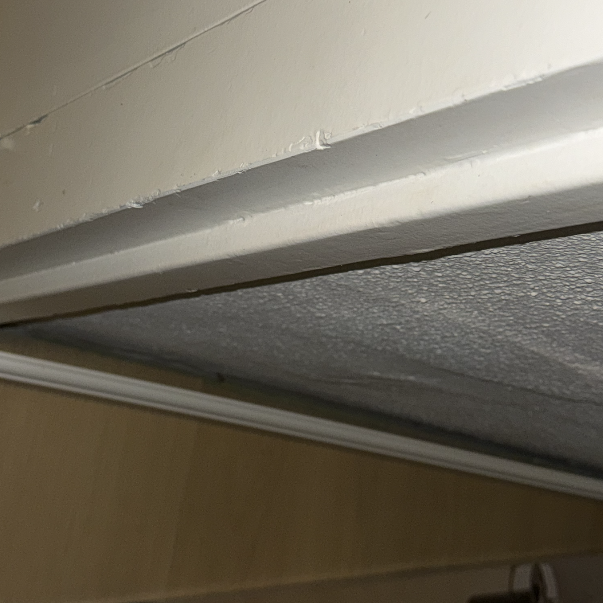
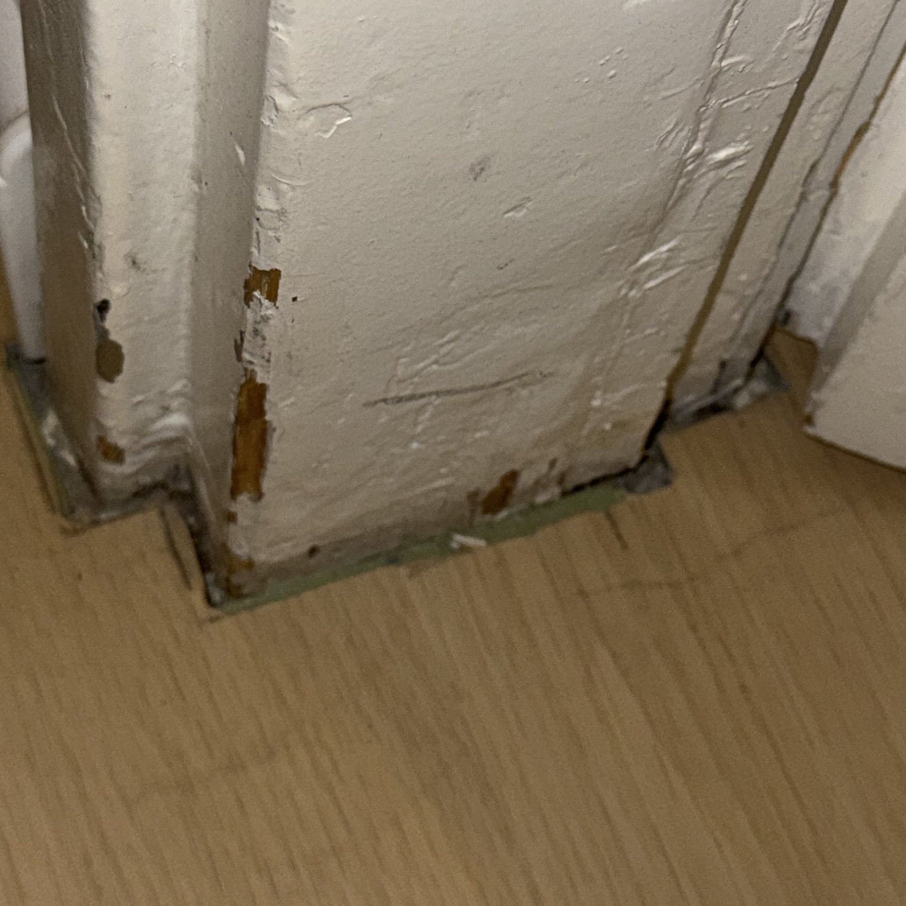
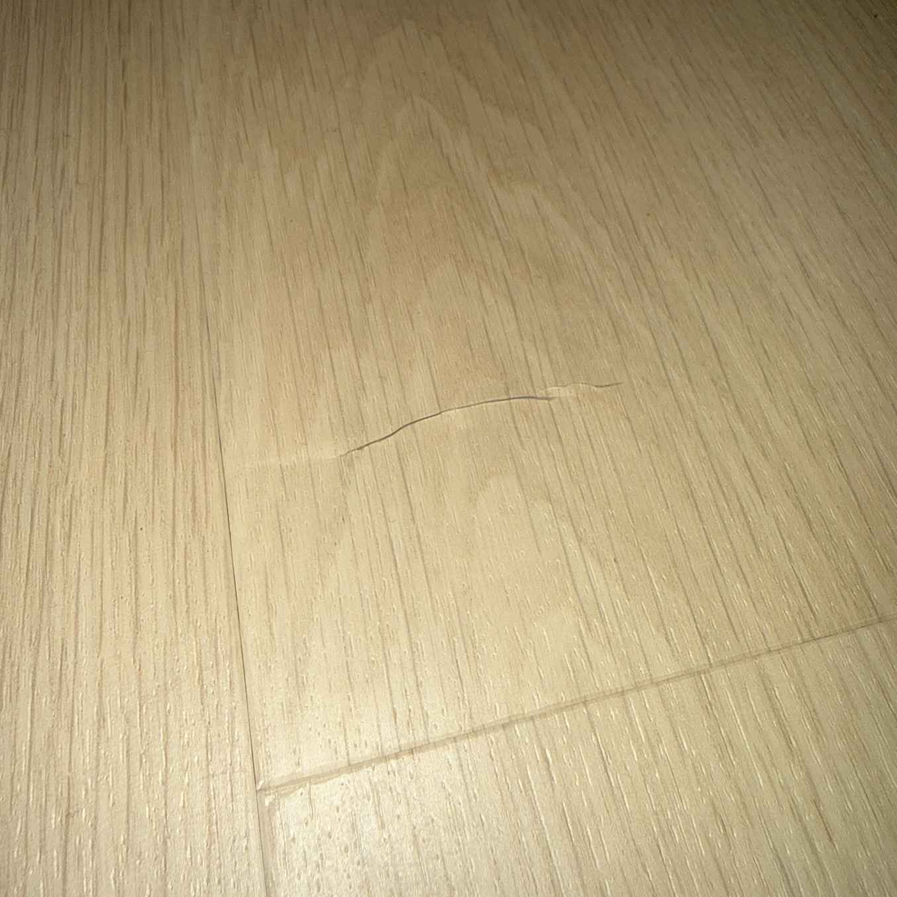
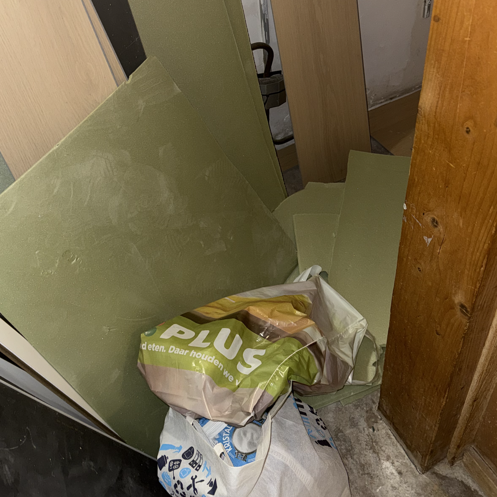
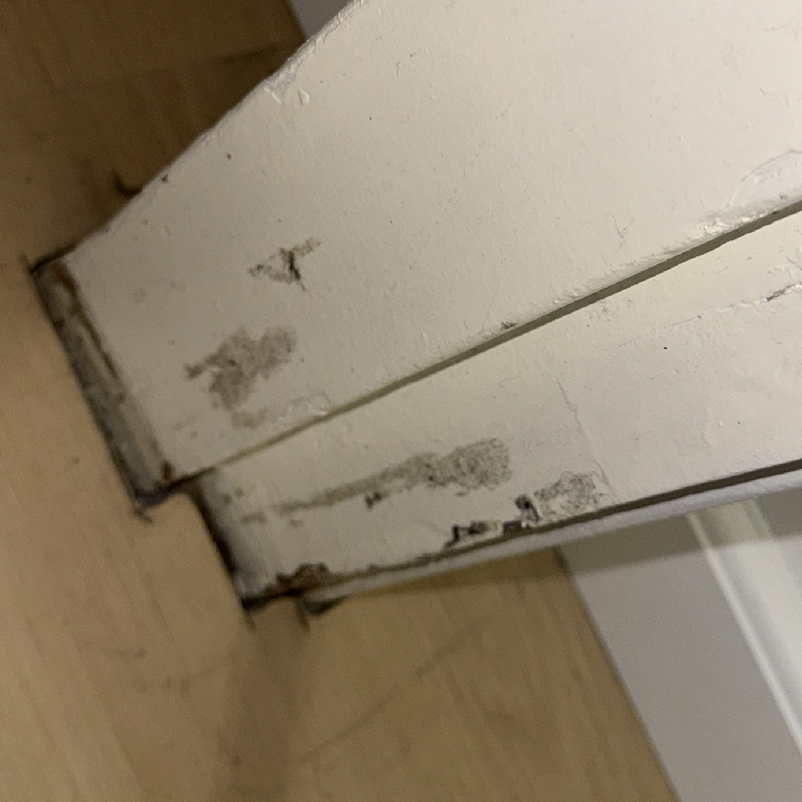
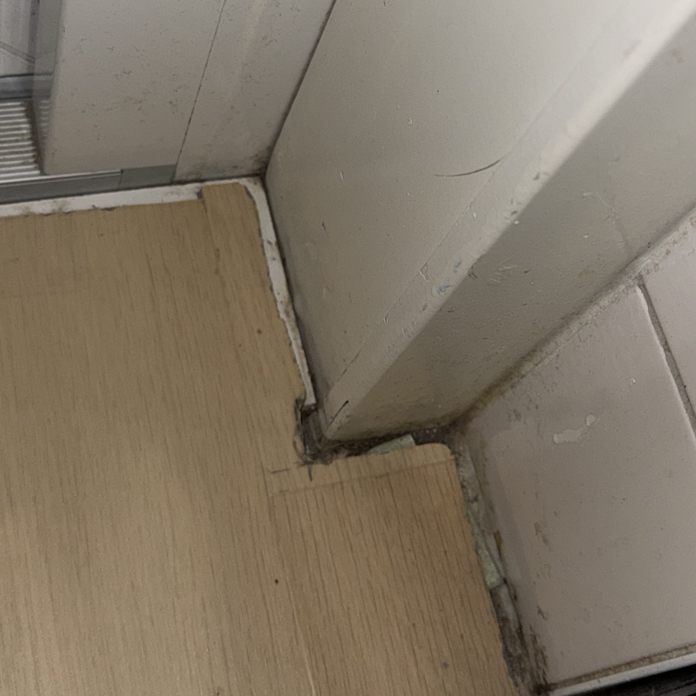

Een eerlijk persoonlijk verslag over een half opgeleverde laminaatvloer
Op deze pagina deel ik mijn ervaring met Flooringfy als laminaat legger, hiermee wil ik consumenten waarschuwen. De opdracht was duidelijk: het leggen van een volledige vloer inclusief plinten. Helaas is de realiteit anders.
Na een goede start (inkooplijst, aanbetaling) verzuimde de vakman te melden dat laminaat niet buiten mocht staan. Later eiste hij onverwacht hoge vervoerskosten, liet het werk half af achter (geen kelder, losse plint). Daarnaast veroorzaakte hij barsten in de vloer (wat hij ontkent) en loog hij over zijn vestigingsplaats (Rotterdam i.p.v. België). De betaling is puur onder druk gedaan, hij schreeuwde tegen een moeder en zusje. Hij weigert verantwoordelijkheid.
Hieronder ziet u foto's van hoe de vloer is achtergelaten. Kieren, ontbrekende plinten en rommel.






Ik blijk helaas niet de enige te zijn. Hieronder recensies die online te vinden zijn over Flooringfy.
"erg ontevede met het resultaat geen aanrader"
"Eerste dag begon goed, daarna werden afspraken niet nagekomen, is het werk niet afgemaakt en hebben wij iemand anders moeten inschakelen."